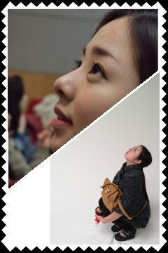

| 2012/04 06 Fri | 川村真洋 明日は全握☆〃＾ω＾〃コメント 返し |
ほいっ♪ろってぃ-です#・ω)/
最近 暖かいですね(#⌒‐⌒)
日向はポカポカでありますね(/ω・)
『そろそろ まひろの時代か・・・笑』
↑調子のりましぃ〜ーーった〃ω〃笑
...
もう半袖きてます(*^^*)♪
ってゆうたらびっくりするう？
にひひひ。))
ちなみに 昨日と今日は
朝から一人でランニングです
ι(・н・?)┐
帰ってきて洗濯物たたんで
ナウ。
という感じです＾＾
いい汗かきました(*^^*)
明日の名古屋全握のために
気合い入れないといけないしねっω))
楽しみ〃ω〃
皆様に会えます。☆
最近 みなさんのコメントを読んで
たくさんの元気を
頂いておりまする♪
あっ)) あとね、
ブログのコメントの質問ね
ちゃんと返したいんだけ
ど
どーしてもどーしても
質問返しが追いていかないんです(..)
許してください(TT。)
ってことで
まだ返せてない質問を
返してゆきまーす(*^^*)
★もし、「フンコロガシの歌でソロデビューしなさい。」って言われたらどうする？
☆フンコロガシはかんべんしてください(T_T)って気持ちです^^
★チェッカーズネタもOKなん？
☆はいっ、実はあまり詳しくありませんでした><
★ろってぃーはサッカーやったら
MFのポジションはどう？
☆ほほぉ〜 今後サッカーする時
そのポジションをやらせてもらおうかしら・ω・〃
★真洋ねた名付け親は誰ですか？
☆ままさん♪^^
★ろってぃーにとって支えになってる曲ってありますか？
☆全てっ!笑
好きなアーティストの曲を聞いたり歌ったりすると
『あ〜、この人は立派な歌手になるために努力してきたんやろうなぁ〜
ぢゃあこの人を追い越す気持ちで頑張らなっ!』
って思ったりはしますね＾ω＾
★ろってぃーは二度寝してやばかったことってないん？
☆特に覚えてへんけど、
一回位やと思いますω
だってねっ、まひろ中学の時
無遅刻 無欠席 ぢゃww(*^^*)♪
ちなみに早退もしたことないです♪
でも、高校の入学式の次の日
遅刻をしました 笑
★一番仲良しは誰かな？
☆一番とか決めれないようっω・=
よく一緒にいたり一緒にアホなことするメンバーをしいてゆうなら
せいらりん、まりか、まあや、あみ、・・・ホホホ。きりなかたー^ω^
★まひろマック好き？
☆好きだよっ＾ω＾
まひろはいつも
フィレオフィッシュ★☆★を
食べるんだから(⌒〜⌒)
★どんな物や、キャラクターが好きかなぁ？
☆コカ・コーラのグッズとかぁ
m&mのキャラクターとか大好きです^^
っていいながらあまり私物にないけど(T-T)
家のカギにつけてるキーホルダーが
コカ・コーラ♪
★ろってぃーの好きなサッカーチームってどこ？
☆まひろ試合とか見に行ったら
どっちも応援してしまうねん(>_<)
だから、全チーム応援してるω))
★マクド派？モス？ロッテリア派？
☆何でロッテリアやねん 笑っ
どっちも大好き♪
大阪に居る時はよくフレンド様とマクドに行きました^^
で、乃木坂になってすぐの時は
メンバーとよくモスで待ち合わせしたりしてました^^
★自分を動物に例えると？
☆子犬みたい〜〃ω
ってよく言われます＾＾
あと、リス。
子犬にしてもリスにしても
まひろより100万倍かわいいってばね〃ω〃
★遊ぶ時、数時間遊ばなかったりしないと気済まない派？
☆そうゆうのは無いですねっ(*^^*)
要件が済んで まだ時間が
大丈夫だったら、
カフェに行ってお話したり歩き回ったりしますね♪
★乃木坂入ってなかったら
何やってましたか？
☆歌詞書いて自分の歌で
ライブしたり
ダンスを続けていたと思います＾ω＾
rotty☆spacial!! WARA ♪

のし。